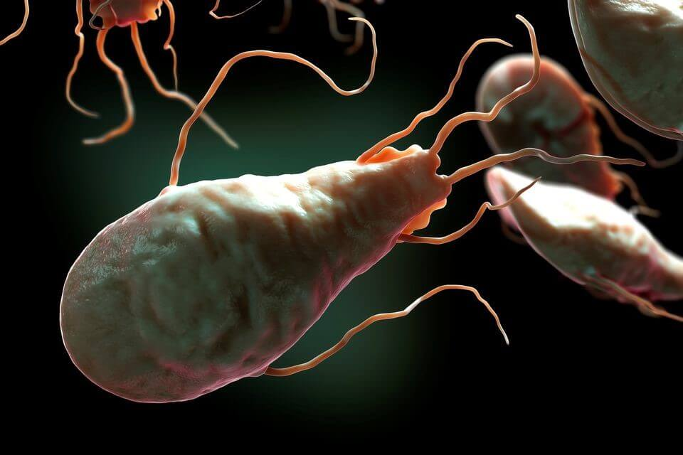
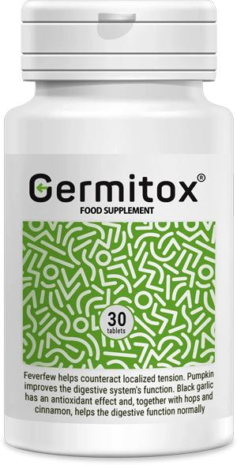

80% všetkých chorôb je spôsobených parazitárnymi infekciami. Ako sa nestať potravinami pre hlísty?

Infekcia parazitmi je spojená s rozvojom celého radu chorôb: cukrovka, hypertenzia, rôzne druhy rakoviny, neplodnosť a mnoho ďalších. Dôvodom je to, že odpadové produkty parazitov obsahujú toxíny, ktoré spôsobujú imunodeficienciu. informovali o tom úrad Svetovej zdravotníckej organizácie na stretnutí s novinármi 25. decembra 2019.
O prepojení parazitických infekcií a rôznych chorôb, nám porozprávala profesorka a parazitologička Mudr. Viera Červeňaková .
Téma dnešnej konverzácie je trochu nezvyčajná, ale o nič menej dôležitá. Bez ďalších okolkov dávam oficiálne štatistiky:
-
• Svetová zdravotnícka organizácia uvádza, že približne 4,5 miliardy ľudí trpí rôznymi parazitárnymi chorobami - viac ako 60% svetovej populácie
-
• Každý tretí Európan je nakazený parazitmi
-
• Každý rok zomrie na parazitárne infekcie 15 - 17 miliónov ľudí
-
• Helmintózy - tretia najbežnejšia choroba na svete
To znamená, že s veľkou pravdepodobnosťou žijú vo vašom tele parazity. A aj keď nežijú, šanca na infekciu je veľmi vysoká.
Živý organizmus nemôže prežiť bez kremíka, je to známa skutočnosť. Zatiaľ čo sa v tele množia parazity, najprv začínajú jesť kremík. A bez kremíka sa vápnik - stavebný materiál kostí - prestáva absorbovať. Potom – radikulitída, osteochondróza, polyartritída .
TrichomonádaNajzaujímavejší objav v parazitológii sa však objavil v roku 1989 a dostal názov „Vlastnosť Trichomonády, ktorá sa degeneruje do nádorovej bunky“. Ukázalo sa, že, rakovina je ochorenie spôsobená parazitmi. A hlavný provokatér nádoru he trichomonáda.
Príčinnými pôvodcami všetkých chorôb sú huby a hlísty.
Nadváha a hlísty sú nekompatibilné,“ myslíte si? Bez ohľadu na to. Pre infikovaných ľudí sa napríklad telesný tuk stáva ochranou pred pásomnicami a pred toxickými účinkami.
 Mozog delfínov infikovaný parazitmi. Myslíte si, ľudí sa to nestáva?...
Mozog delfínov infikovaný parazitmi. Myslíte si, ľudí sa to nestáva?...
V dnešnej dobe žijú v tele takmer každého obyvateľ mesta, červy alebo hlísty. „Ak ich má takmer každý, potom je to normou?“, Pýtate sa? Nie je to norma!
My, parazitológovia, upozorňujeme nato už dlho. Hlavným problémom je nedostatok prostriedkov, ktoré by mohli vyhladiť všetky možné typy parazitov, pričom by to nepoškodilo samotnú osobu.
Len pred niekoľkými dňami sa skončili posledné klinické skúšky nového lieku – Germitox . A už s istotou môžem povedať, že ide o prelom v liečbe parazitických infekcií. Okrem úplnej rehabilitácie, Germitox sa preukázali vynikajúce „vedľajšie účinky“ vo forme očistenia tela od toxínov, priaznivý účinok na orgány gastrointestinálneho traktu, stimuláciu odtoku žlče, odstránenie vredov, gastritídy a mnohých chronických chorôb; zlepšenie stavu pokožky, vlasov, nechtov; normalizácia stolice; zbaviť sa alergie.
Teraz Germitox môžete kúpiť na oficiálnej webovej stránke výrobcu za zníženú cenu. Ponáhľajte sa, veľmi skoro Germitox sa bude predávať v lekárňach a cena bude úplne iná.
OBJEDNAŤ Germitox
Komentáre:
Komentovať